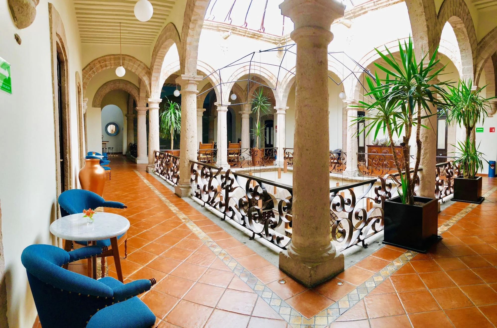

Bienvenido a tu descanso ideal
Disfruta de la mejor experiencia de hospedaje con ambientes frescos, modernos y confortables.
Sobre Nosotros
En Hotel Azul Sereno nos especializamos en brindar una experiencia única de hospedaje, combinando comodidad, elegancia y un ambiente relajante. Nuestro compromiso es ofrecer un servicio personalizado que haga sentir a cada huésped como en casa.
Contamos con una espectacular terraza en la azotea para disfrutar de momentos inolvidables, y nuestra ubicación privilegiada a unos pasos de la Catedral de Morelia te conecta con la riqueza cultural de la ciudad. Para deleitar tu paladar, te recomendamos visitar Casa Ofelia 94, donde podrás disfrutar de desayunos y cenas con un sabor auténtico. Nuestros visitantes destacan la calidad de nuestras amenidades y la calidez de nuestro personal, siempre dispuesto a brindar la mejor atención.
Misión
Proporcionar a nuestros clientes un espacio de descanso y bienestar, con instalaciones modernas y un servicio cálido que supere sus expectativas, fomentando la hospitalidad y la confianza.
Visión
Ser reconocidos como el hotel líder en la región por nuestra excelencia en atención al cliente, innovación en servicios y compromiso con la satisfacción de cada visitante.